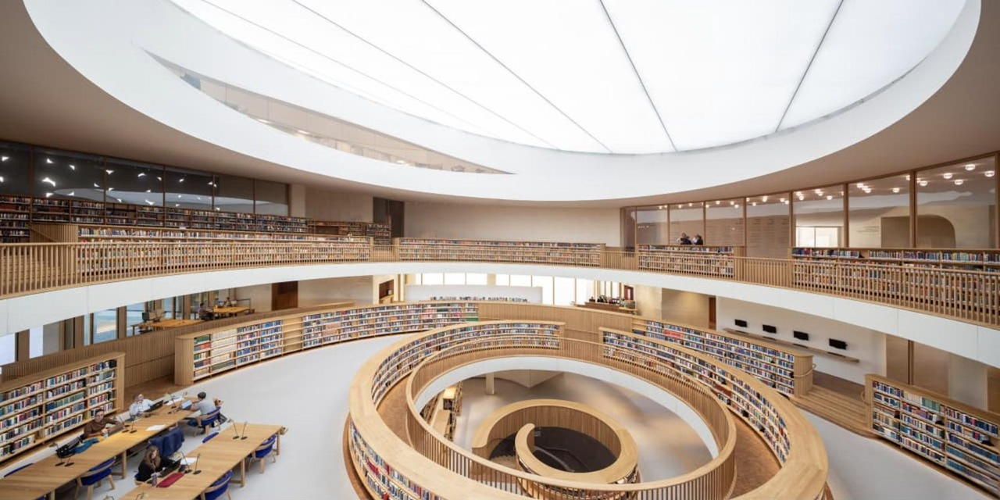
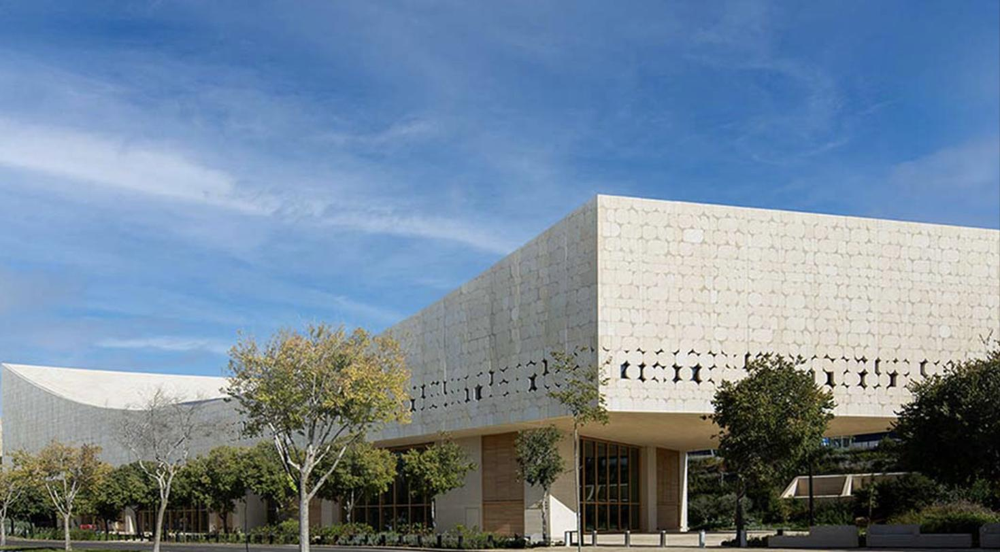
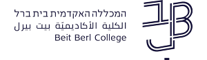

פגישת המשך
הכול כבר כאן.
עכשיו הוא יכול להיות אישי.
אוספים, ביקור, אירועים ותוכן - במקום אחד, סביב המשתמש.
ספטמבר 2026הספרייה הלאומית של ישראל200Apps
01 מה שעלה בפגישה
מטרה אחת: להפוך את הספרייה לחלק קבוע מהשבוע.
1
לחזור
סיבה רלוונטית לפתוח את האפליקציה לפחות פעם בשבוע.
2
להגיע
לחבר בין מה שמעניין את המשתמש לבין אירוע, ספר או ביקור בספרייה.
3
להשתמש בקלות
חיפוש, הזמנות, כרטיס קורא והתמצאות - בלי לחפש איפה עושים כל דבר.
כל יכולת שנציע צריכה לשרת לפחות אחת משלוש המטרות.

02 למה זה חשוב
החוויה של הספרייה לא מתחילה ונגמרת בבניין.
לספרייה הלאומית יש נוכחות, איכות וקנה מידה יוצאי דופן. החוויה הדיגיטלית צריכה להיות המשך ישיר של אותה רמה.
להוריד חיכוך
פחות לחפש איפה מזמינים, איפה הספר, מה השעה ומה צריך לעשות.
לפשט את הביקור
כל מה שצריך לפני, בזמן ואחרי הביקור, במקום אחד.
להעצים את החוויה
לא רק לבצע פעולות, אלא לגלות תוכן, אירועים ואוספים שמתאימים לכל קורא.
האפליקציה לא מחליפה את הספרייה.
היא מאפשרת לחוויה של הספרייה להמשיך גם מחוץ לבניין, בקלות ובפשטות.
היא מאפשרת לחוויה של הספרייה להמשיך גם מחוץ לבניין, בקלות ובפשטות.
06 מקרוב · 3 מתוך 4 · בשבילי
סיבה לחזור, גם כשלא חיפשתי משהו.
מה המשתמש רואהפיד קצר שמתחדש: דמות שקשורה להיום, אירוע היסטורי, פריט מהאוסף, טקסט או המלצה לפי תחומי עניין, עם אפשרות לסמן מה עניין אותו.
למה זה חשובהספרייה עוברת מיעד שמגיעים אליו כשצריך משהו, למקום שחוזרים אליו מתוך עניין. בנוסף, אותות פשוטים כמו פתיחה, שמירה ולייק עוזרים לדייק את מה שיופיע בהמשך.
מה נדרשבחירה של כמה מקורות תוכן קיימים, דרך פשוטה להתאים אותם לתחומי עניין, ולכידה בסיסית של אותות עניין כמו פתיחה, שמירה ולייק.
בשבילי · היום
תוכן שמתאים לתחומי העניין שלך
היסטוריה של ירושליםמוזיקה ישראליתעיתונות
אורי צבי גרינברג
דבר, 22.9.1948
 כי התעניינת בהיסטוריה של ירושלים
כי התעניינת בהיסטוריה של ירושליםתצלום היסטורי
אוסף התצלומים · כ-2,500,000 פריטים
פיוט
כי התעניינת בהיסטוריה של ירושלים›בשבילי
תצלום היסטורי
הספרנים צירפו שורת הקשר קצרה. אפשר לקרוא, להאזין או לשמור לביקור.
שמור
הסבר קולי
פתח פריט
עוד מאותו נושא
עמוד עיתון
לפריטהיסטוריה של ירושלים · עיתונות היסטורית
›הביקור שלי היום
יום ג׳ · 22.9 · הספרייה פתוחה עד 20:00
10:30מחכה
רחובות הנהר
מוכןדלפק אולם הקריאה הראשי · קומה 0
12:00חדר
חדר לימוד בצוותא
הוזמןאולם הקריאה הראשי · 12:00-14:00
תצלום היסטורי
שמורשמרת לביקור · אוסף התצלומים
13.1020:30
כשאמא באה הנה
שמור ✓2 מקומות
ניווט בתוך הספרייה
המטרה: להיכנס לפחות פעם בשבוע, וללמוד מה מחזיר כל משתמש.
10 מי אנחנו
200Apps · מוצר מקצה לקצה
200Apps היא חברת מוצר ופיתוח ירושלמית שמלווה ארגונים משלב הרעיון ועד מוצר שעובד בשטח.
12+
שנות ניסיון
כ-300
מוצרים מקצה לקצה
קורת גג אחת
מוצר, UX/UI, פיתוח, דאטה ו-AI
חלק מהמותגים שעובדים איתנו

היתרון כאן הוא לא רק לבנות אפליקציה, אלא לחבר מוצר חדש למערכות, לתוכן ולתהליכים שכבר קיימים בספרייה.
לא צריך להחליט עכשיו על מוצר.
צריך לבחור איפה מתחילים.
הצעד הבא
פגישת עבודה אחת.
נבחר רמת היקף, מסלול עבודה וצוות מצומצם.
משם נבנה גרסה ראשונה קונקרטית שאפשר לבדוק.
המטרה: לצאת מהפגישה הבאה עם scope ברור ותכנית עבודה.
אלכס יעקבובחמי בן לביא200Appshemi@200apps.co054-4608119